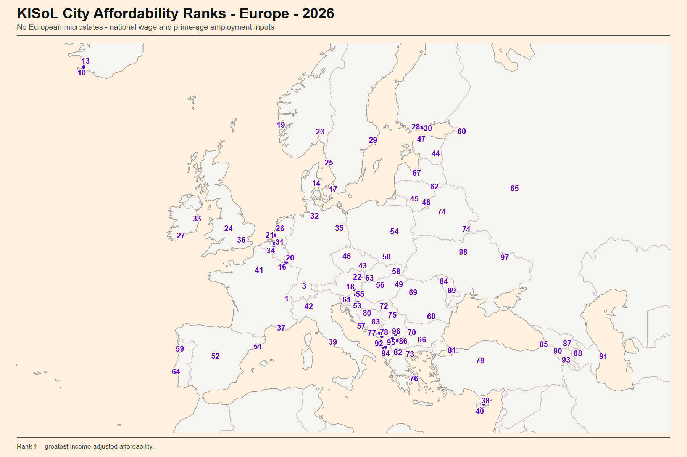
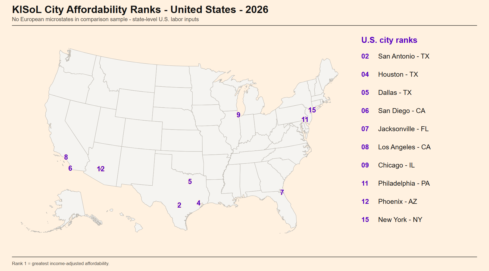

Income can outweigh high prices
Several high-income cities remain strong on affordability even though their baskets are among the most expensive. Their national or state-level wage capacity is large enough to offset much of the price disadvantage.
July 2026 snapshot · Europe and the United States
A more realistic way to compare purchasing power and affordability across countries and cities using a fully standardized international basket, rather than methodologically problematic PPP or nominal comparisons.
Affordability: intended for a local resident or a new mover who expects to work on-site and earn locally. It compares the same standardized basket with the earning capacity applicable to that city (national-level for Europe and state-level for the United States).
Basket cost: intended for someone who will not work locally and wants to compare living costs alone, such as a remote worker or a person bringing income from elsewhere. Local wages and employment are removed from this view.
Geographic view
The sample uses the two largest cities by population in each covered European country and the ten largest in the United States. The main view excludes European microstates; Luxembourg remains included.


City table
| Rank | City | Country | Region | Affordability index |
|---|
About the results
Several high-income cities remain strong on affordability even though their baskets are among the most expensive. Their national or state-level wage capacity is large enough to offset much of the price disadvantage.
In this sample, cities with the least expensive baskets tended to sit near the bottom of the income-adjusted ranking. Lower prices did not compensate for lower applicable net earnings and weaker prime-age employment.
European cities in the same country share national income inputs. U.S. cities use state-level wage and prime-age employment inputs, so cities in the same state share those inputs. Remaining differences within each geography therefore come from city prices rather than a city-wage estimate.
Data caution
U.S. labor inputs are measured at the state level. Each state's net median wage is estimated by adjusting the national U.S. net median in proportion to the state's average weekly wage relative to the national average, using BLS Quarterly Census of Employment and Wages data for the fourth quarter of 2025. State prime-age employment coefficients are direct BLS 2025 11-month provisional observations.
The U.S. state wage is therefore a transparent geographic estimate, not a directly published state net median. European inputs are labelled by evidence type as well as year. A calculated net value is never described as a directly observed median.
The source ledger records the exact source, population, calculation, evidence class, and caveat for every updated wage. Across the wider sample, other modelled wage inputs remain clearly labelled and should not be read as direct national net medians. New official releases will replace estimates when comparable hard data becomes available.
About the project
I created KISoL (Kocyigit's Index of Standard of Living) to compare affordability and purchasing power across cities and countries more directly. Common headline measures answer related but different questions.
KISoL addresses these problems by asking a narrower and more concrete question. KISoL prices the same standardized basket in every city, uses current market-entry housing costs, and compares that basket with net median earnings adjusted for prime-age employment. Categories that cannot be held reasonably consistent are excluded instead of being treated as equivalent. The city ranking measures the material purchasing capacity of a locally employed resident or newcomer, while the basket-only ranking isolates living costs for someone whose income comes from elsewhere. KISoL is not a complete measure of welfare (as no such measure could technically be complete), but it provides a more direct, consistent, methodologically sound, and auditable measure of material living standards than any one of the headline indicators above.
This first edition is a cross-sectional snapshot for 2026, prepared in July using the most recent available data. My intention is to repeat the research every year using the same core definitions, transparent source records, and comparable market-entry prices.
As annual editions accumulate, KISoL can become a time series. That will make it possible to compare each city with its own earlier observations, measure how its basket cost and affordability change, and separate year-to-year movement from a one-time ranking position.
Each edition will retain its observation date, source ledger, city sample, and methodology version so that future comparisons remain interpretable when sources, products, or coverage must change.
I am Recep Kocyigit, a graduate student and macroeconomic analyst based in Brno. I am the researcher behind KISoL. I am also the creator of ESOEP Club, the Magellanique Monetary Policy Game, magellanique.com, and many other projects. My interests include economics, prices, labor markets, game design, writing research, and building transparent measures that readers can inspect rather than merely trust :)
If you liked my work, you can connect with me on LinkedIn or email me at 530618@mail.muni.cz :)
If you would like to help with KISoL, please get in touch. Specific, auditable data for previous years would be especially valuable because it can help extend the project backwards and build a longer city-level time series.
Audit and research access
The workbooks include source ledgers, transformations, and limitations. They are supplied by email on request.
Data requests: magellanique@yahoo.com